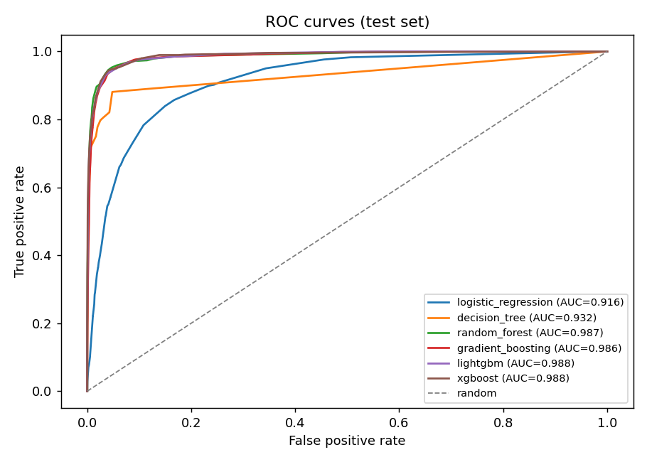

Race Strategist
F1 Pit Stop Prediction Prototype Using Classical Machine Learning
Pit stops are rare, expensive, and timing-sensitive.
The driver stays out when tyre life, pace, and race context suggest the window is closing.
The car loses track position, commits to a suboptimal stint, or exits into traffic.
The model learns recurring pit-stop signals from historical laps.
Each row shows a driver, lap, tyre state, pace, position, race progress, and the known outcome.
Finds patterns that separate normal laps from laps immediately before pit stops.
Outputs a probability that can become a pit/no-pit decision through a threshold.
What the model sees
- Lap number
- Tyre life
- Compound
- Position
- Lap-time delta
- Race progress
What the model learns to predict
No pit next lap 1
Pit next lap
Every lap becomes one training example.
Positive class is rare: only 3.46% on the test set.
Accuracy can be misleading. A model that says "no pit" almost every lap looks accurate, but it is not useful for strategy. That is why the deck focuses on ROC-AUC, recall, precision, and F1.
Raw race data must be made fair and model-readable.
Driver, race, lap, tyre, position, pace, degradation.
Drop `PitNextLap`, `NextStint`, and `PitStop` before training.
Fill missing compound values as `UNKNOWN`.
Causal lag and rolling features per (Driver, Race, Year).
Scale numeric fields or encode categories depending on model type.
No race appears in both train and test.
Scaled path
RobustScaler + OneHotEncoder + TargetEncoder for Logistic Regression.
Tree path
Numeric passthrough + OrdinalEncoder for Decision Tree, Random Forest, and XGBoost.
Evaluation guardrail
Race-grouping prevents unrealistic "same race in train and test" performance.
Compare classical models and select the strongest pit-risk model.
Histogram-based boosting with scale_pos_weight for the rare pit-stop class.
Many trees vote together, improving stability and ranking quality.
Captures simple thresholds such as tyre life and race progress.
Fast, interpretable, good sanity-check baseline.
Combined with causal temporal features and a recall-targeted threshold, XGBoost delivers ROC-AUC 0.988, recall 0.639, and PR-AUC 0.857 on the race-grouped hold-out set — the strongest result across all four models compared.
ROC curves show XGBoost separates pit-risk laps best.

XGBoost has the strongest ranking quality on the race-grouped hold-out set, ahead of Random Forest, Decision Tree, and Logistic Regression.
The model finds strong pit-stop signal across four compared classifiers.
Confusion matrix logic
correctly stay out
unnecessary pit alert
missed pit call
caught pit call
A probability becomes a pit/no-pit decision through a threshold.
- Lap
- 24
- Compound
- MEDIUM
- Tyre life
- 18 laps
- Position
- P5
- Lap delta
- +0.82s
- Race progress
- 45%
0.72 >= 0.488
Predict: PIT NEXT LAPThe model does not "know" the future. It estimates risk from patterns learned in historical lap data.
An ML prototype that is ready to be more advanced race strategy system.
What worked
Race-grouped evaluation, leakage control, causal temporal features, XGBoost, isotonic calibration, and a recall-targeted threshold produced a credible pit-risk detector.
What it means
XGBoost ranks pit-risk laps best with ROC-AUC 0.988, recall 0.639, and PR-AUC 0.857 on the race-grouped hold-out set.
What still limits it
The app uses no prior-lap history at inference time, so temporal features fall back to sentinels. Live strategy also needs safety car state, gaps, and weather.
Race Strategist uses historical F1 lap data to create a clear and testable workflow for predicting whether a driver will pit on the next lap.
References and project links.
https://kaggle.com/datasets/aadigupta1601/f1-strategy-dataset-pit-stop-prediction/